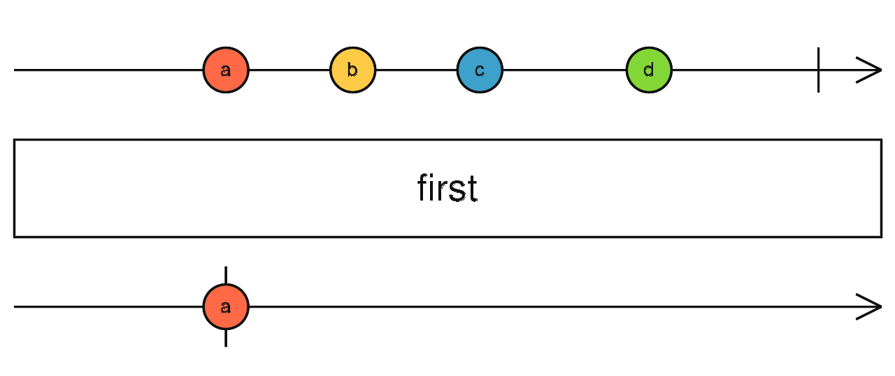

first
参数列表：
-
predicate
function(value: T, index: number, source: Observable): boolean
检测函数，对输出的第一个值进行检查，返回true表示满足条件，返回false则不会输出
-
resultSelector
function(value: T, index: number): R
对输出的数据进行转换，返回R类型的新的数据
-
defaultValue
R
如果source在complete之前没有输出任何值，则返回这个默认值
返回值: Observable <T|R>
珠宝图:

功能说明:
- first 只输出满足条件的第一个数值。如果source都complete还没有满足的值，则直接返回defaultValue
备注事项:
点击不同按钮查看不同demo 代码效果